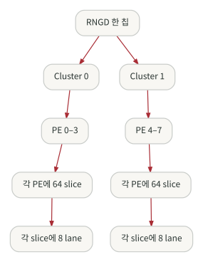
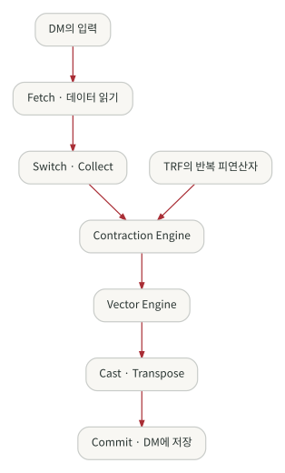

RNGD(제품명 Renegade)는 딥러닝 추론을 위한 NPU(Neural Processing Unit)다. 이 장에서 먼저 알아야 할 것은 최대 연산량보다 어떤 데이터를 어느 연산기에 언제 공급하는가이다. 같은 수식을 실행해도 데이터를 나누는 축, 재사용 횟수, 메모리 이동 순서에 따라 성능이 달라진다. FuryNo5가 만드는 코드를 이해하려면 이 연결을 먼저 보아야 한다.
근거 범위 · 하드웨어 사양은 Furiosa의 RNGD 제품 문서, 실행 구조는 ISCA 2024 논문과
furiosa-opt의3d43bc9d20f324af60e3006c3f1541938d7f5097문서를 대조했다. 수치는 제조사의 명목 사양이며 이 핸드북에서 측정한 결과가 아니다. 논문의 구형 수치와 현재 제품 사양이 다른 경우 현재 제품 문서를 우선한다.
1. 개발자가 기억할 사양
| 항목 | 공식 공개 사양 | 개발할 때의 의미 |
|---|---|---|
| 설계 | TCP(Tensor Contraction Processor) | 텐서 축을 결합·축약하는 연산이 중심이다. |
| 칩 전체 연산량 | BF16 256 TFLOPS, FP8 512 TFLOPS, INT8 512 TOPS, INT4 1024 TOPS | 서로 다른 정밀도의 수치다. 모델 처리량과 동일하지 않다. |
| HBM3(High Bandwidth Memory 3) | 48 GB, 1.5 TB/s | 가중치·큰 활성값을 담는 장치 메모리다. |
| 온칩 SRAM(Static Random Access Memory) | 256 MB | 연산 가까이에서 데이터를 재사용한다. |
| 호스트 연결 | PCIe(Peripheral Component Interconnect Express) Gen5 ×16 | CPU 메모리 왕복은 HBM 내부 접근과 다른 비용이다. |
| 장치 분할 | 최대 8 인스턴스, SR-IOV(Single Root I/O Virtualization) | 한 물리 카드와 한 실행 인스턴스의 자원량이 다를 수 있다. |
BF16은 Brain Floating Point 16, FP8은 8-bit Floating Point, TFLOPS는 초당 조 단위 부동소수점 연산, TOPS는 초당 조 단위 연산을 뜻한다. 연산량 표는 해당 형식·조건에서의 칩 전체 능력을 나타낸다. 공식 RNGD 사양
예를 들어 작은 벡터 하나를 처리하는 함수가 전체 장치를 충분히 채우지 못한다면, 칩의 최대 TFLOPS가 높아도 사용자 체감 지연은 줄지 않을 수 있다. 이때는 연산기를 더 쓰는 방법보다 호출 준비·전송·동기화의 비중을 먼저 확인해야 한다. 이는 성능 수치에서 직접 도출한 일반적인 판단이며 특정 커널의 실측 결론은 아니다.
2. PE와 slice를 같은 것으로 생각하지 말자
PE(Processing Element)는 장치를 구성하는 실행 단위다. 공개 vISA(Virtual Instruction Set Architecture) 문서에서 한 칩은 두 cluster, cluster당 네 PE, PE당 64 slice로 설명된다. 따라서 전체는 여덟 PE와 512 slice다. Slice는 Tensor Unit의 세부 병렬 단위이며, Contraction Engine 안에는 slice당 여덟 lane이 있다. 공간 차원과 하드웨어 수

그림의 구조 보기
flowchart TB
C["RNGD 한 칩"] --> G0["Cluster 0"]
C --> G1["Cluster 1"]
G0 --> P0["PE 0–3"]
G1 --> P1["PE 4–7"]
P0 --> S0["각 PE에 64 slice"]
P1 --> S1["각 PE에 64 slice"]
S0 --> L0["각 slice에 8 lane"]
S1 --> L1["각 slice에 8 lane"]이 그림은 계산 자원의 계층을 나타낸다. furiosa-smi의 core 표기, SDK의 fusion 수, Rust 타입의 Chip/Cluster/Slice/Lane은 서로 관계가 있지만 동일한 API 매개변수는 아니다. 예를 들어 Rust의 #[device(chip = 1)]은 칩 수를 나타내고, Python의 set_fusion(8)은 해당 SDK의 PE 실행 설정이다. 각각의 런타임이 지원하는 배치 단위와 사용 권한을 확인해야 한다. vISA 배치 제약, FuryNo5의 Python 설정권한 필요
3. TCP가 다루는 계산: 축을 남기고 축을 줄인다
행렬곱을 A[M,K] × B[K,N] → C[M,N]으로 쓰자. M과 N은 출력에 남고, K는 곱한 뒤 더해서 없어진다. 이것이 contraction, 즉 공통 축에 대한 곱과 축약이다.
# CPU에서 의미를 확인하는 예제. Furiosa 장치 API가 아니다.
import numpy as np
a = np.arange(12, dtype=np.float32).reshape(3, 4)
b = np.arange(20, dtype=np.float32).reshape(4, 5)
c = np.einsum("mk,kn->mn", a, b)
assert np.allclose(c, a @ b)
위 코드의 의미는 하나이지만 실행 방법은 여러 가지다. M을 slice에 나누면 서로 다른 행을 동시에 계산하고, N을 lane에 나누면 하나의 입력을 여러 출력 열에서 재사용할 수 있다. K를 여러 단위에 나누면 나중에 부분합을 합쳐야 한다. 어떤 분배가 유리한지는 형상과 메모리 배치에 달려 있다. TCP 논문은 이런 lowered shape와 tactic 선택, 이웃 연산 사이 배치가 다를 때 필요한 변환을 설명한다. TCP 논문, II–V절
논리 축은 문제의 좌표이고, 물리 축은 그 좌표를 나눠 실행할 장소다. 배치 축 B가 항상 PE를 의미하는 것도 아니고, 숨김 차원 H가 항상 lane을 의미하는 것도 아니다. 둘을 직접 연결하는 선택이 컴파일러와 커널 개발자의 작업이다.
4. 데이터는 연산 파이프라인을 통과한다
공개 vISA는 DM(Data Memory)의 값을 Fetch로 읽고, 필요한 배치로 보내고, 계산하고, Commit으로 저장하는 과정을 드러낸다. Register File은 연산기에 반복해서 공급할 피연산자를 보관한다. 메모리와 연산의 경계

그림의 구조 보기
flowchart TB
D["DM의 입력"] --> F["Fetch · 데이터 읽기"]
F --> S["Switch · Collect"]
S --> C["Contraction Engine"]
R["TRF의 반복 피연산자"] --> C
C --> V["Vector Engine"]
V --> T["Cast · Transpose"]
T --> W["Commit · DM에 저장"]TRF(Tensor Register File)는 contraction 쪽 피연산자를, VRF(Vector Register File)는 vector 쪽 피연산자를 공급한다. 작은 행렬곱을 수백 번 부를 때도 가중치를 이 계층에 재사용할 수 있는지, 매번 바깥 메모리에서 다시 가져오는지를 구별해야 한다. Register File의 물리 비트 용량과 자료형별 API 허용 용량은 같은 숫자로 단순 합산하면 안 된다. Register Files
위 그림의 모든 상자가 항상 실행되는 것은 아니다. 실제 엔진 선택, 우회 경로, 명령 수는 생성된 커널과 스케줄을 확인해야 한다. 예를 들어 단순 덧셈에는 큰 contraction이 필요하지 않다. 반대로 reduction을 어느 엔진에서 처리하는지는 결과 shape만 보고 판단할 수 없다.
5. 제어 코어와 텐서 연산기는 다른 일을 한다
장치 안에도 제어용 CPU 코어와 명령 큐가 있다. TCP 논문은 이 코어가 Tensor Unit의 제어 레지스터·명령 큐를 다루고, DMA와 연산 명령의 의존성을 관리하는 구조를 설명한다. 호스트 CPU가 바쁘다, 장치 제어 코어가 바쁘다, Tensor Unit이 계산 중이다는 서로 다른 관측이다. TCP 논문, III·V절
따라서 CPU 사용률이 올라갔다만으로 CPU 폴백을 주장하면 안 된다. 입력 준비, 토크나이저, 샘플링, 메모리 매핑, 제출·완료 대기처럼 NPU를 사용하면서도 호스트에서 수행하는 일이 있다. 폴백 여부는 어떤 연산이 어느 장치에서 실행됐는가로 확인해야 한다. 5장에서 이를 경로별로 나눈다.
6. 처음 장치를 만났을 때의 관찰
다음 명령은 장치를 변경하지 않고 식별·상태·사용 프로세스를 확인한다. 설치 환경에서 지원되는 세부 옵션은 --help와 함께 확인한다.
furiosa-smi version
furiosa-smi info --format full
furiosa-smi status --format full
furiosa-smi ps
furiosa-smi topo
info는 장치·펌웨어·클록을, status는 메모리·core 사용 상태를, topo는 PCIe 연결과 NUMA(Non-Uniform Memory Access) 배치를 보여준다. 사양 표의 48 GB와 도구 출력의 47.50 GiB는 서로 다른 종류의 표시다. 설치된 런타임의 실제 할당 가능 범위는 allocator·장치 설정에서도 확인해야 한다. Furiosa SMI CLI
이 장을 읽고 답할 수 있어야 할 질문은 세 가지다. 내가 가진 자원은 카드 전체인가 일부 PE인가? 계산할 값은 HBM·DM·Register File 중 어디에 있는가? 논리 축을 병렬 자원과 반복 시간에 어떻게 나누는가? 이 질문이 해결되어야 버킷과 최적화가 의미를 갖는다.
출처
| 근거 | 이 장에서 사용한 범위 |
|---|---|
| RNGD 제품·SDK 문서 | 제품 사양, SR-IOV |
| TCP: A Tensor Contraction Processor for AI Workloads, ISCA 2024 | 설계 이유, 제어 코어, 축과 tactic |
| vISA Spatial and Temporal Dimensions | PE·cluster·slice·lane 관계, 타입 의미 |
| Moving Tensors | 메모리와 파이프라인 경계 |
| Register Files | TRF·VRF의 역할 |
| SMI CLI | 읽기 전용 관찰 명령 |